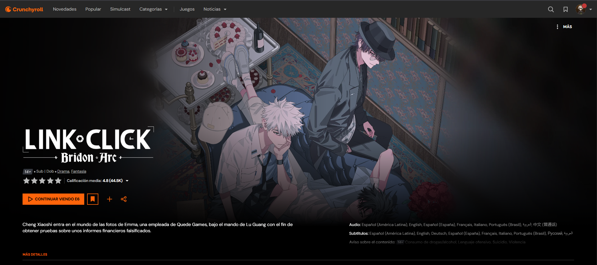
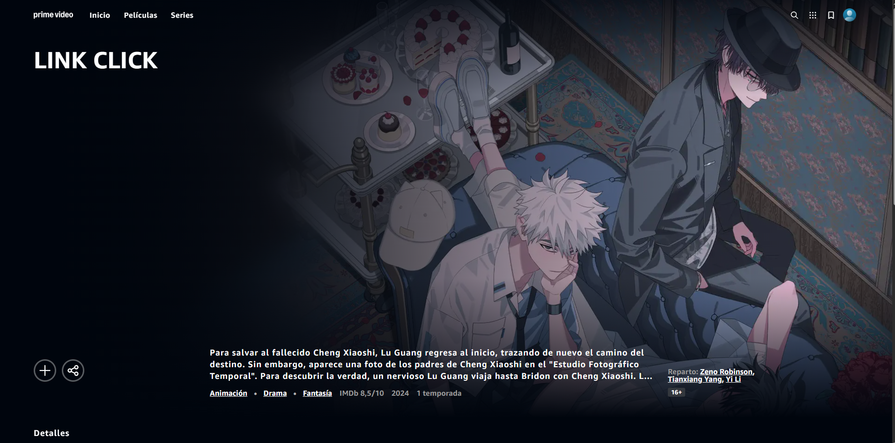

Plataformas
Crunchyroll

Es la plataforma principal y más accesible para disfrutar de la serie.
- Contenido: Incluye las 3 temporadas oficiales y la temporada extra chibi.
- Opciones: Disponible con doblaje y subtítulos en español y múltiples idiomas.
- Mirar 'Link Click' en Crunchyroll
Prime Video

La plataforma de Amazon también cuenta con los derechos de distribución en ciertas regiones.
- Nota importante: En regiones como Argentina, el título puede aparecer como no disponible. Para acceder al catálogo completo que incluye todas las temporadas, suele requerirse el uso de una VPN configurada en Estados Unidos.
- Mirar 'Link Click' en Prime Video
BiliBili

El sitio original donde se transmitió el donghua por primera vez en China.
- Contenido: Permite ver la primera temporada y los cortos gratuitos.
- Opciones: Audio original en chino mandarín. Los subtítulos están disponibles en inglés y chino, pero no cuenta con soporte oficial en español.
- Mirar 'Link Click' en BiliBili